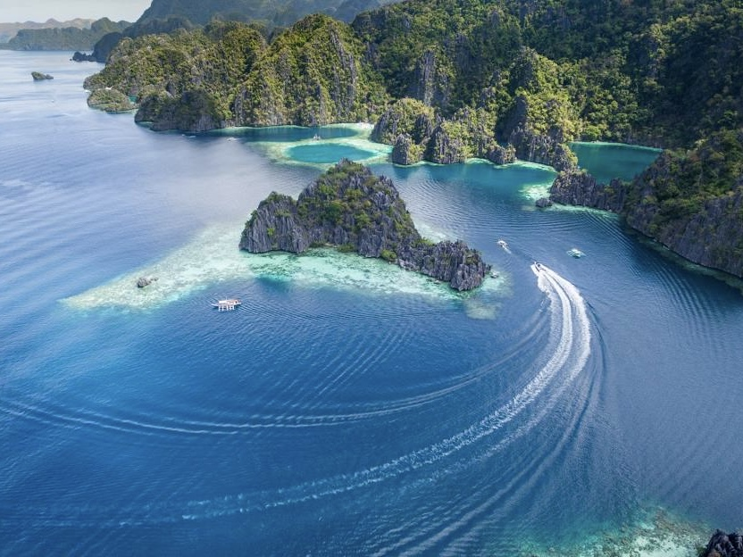
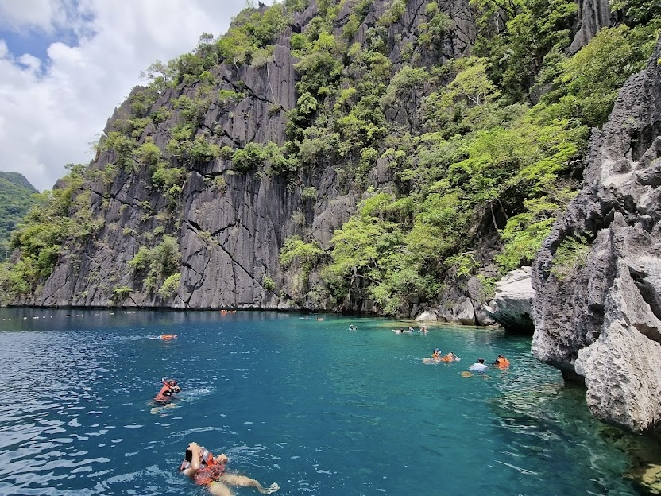
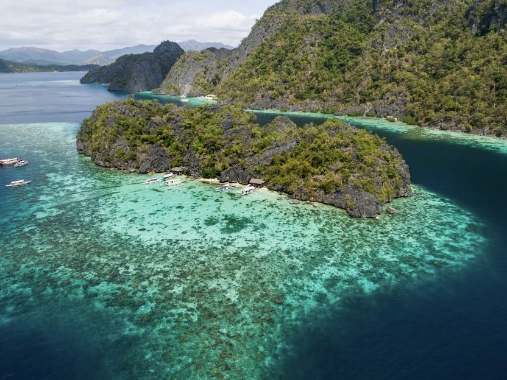
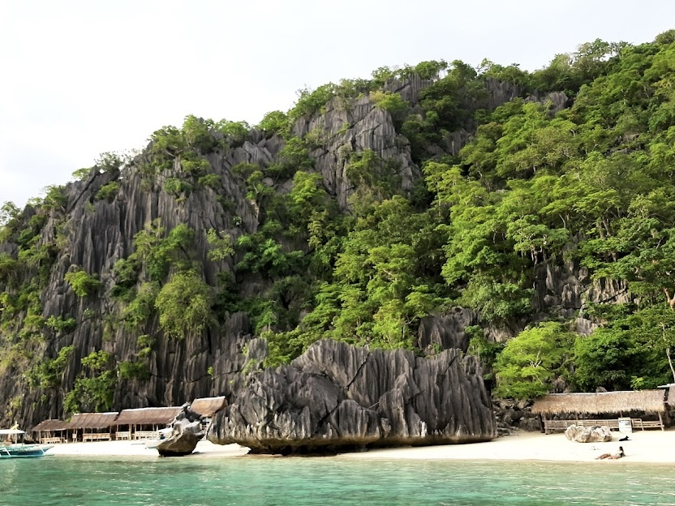
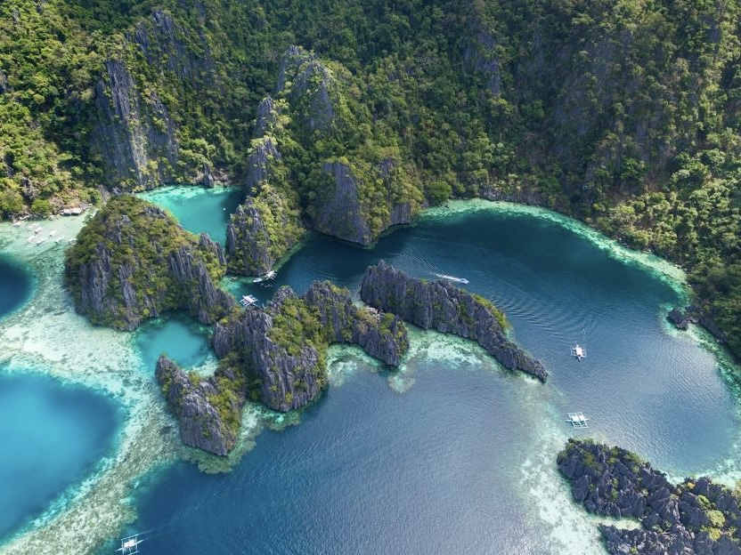

Coron, Palawan
| Located | Famous For | Travel Hours From Manila | Activities |
|---|---|---|---|
| Coron, Palawan, Philippines | Crystal-clear lagoons, beautiful coral reefs, and World War II shipwrecks. Coron is a popular spot for diving and snorkeling. | Approximately 1-2 hours by plane. | Island hopping, snorkeling, scuba diving, and enjoying hot springs. |





| Travel Tips |
|---|
|
Best Time to Visit The best time to visit Coron is during the dry season, from November to May. This period offers the best weather conditions for outdoor activities and exploring the stunning islands and lagoons. |
|
How to Get There Fly directly to Francisco B. Reyes Airport (Coron) from Manila or Cebu for the most convenient route. It's about 1.5 hours by plane from Manila. Alternatively, you can take a ferry from El Nido or other nearby destinations. |
|
Where to Stay Coron Town is a popular area for tourists, offering a variety of accommodations, from luxury resorts to budget-friendly guesthouses. Staying here will keep you close to shops, restaurants, and tour operators. |
|
Pack Light, Pack Smart Bring lightweight, breathable clothing suitable for tropical weather. Don’t forget essentials like sunscreen, a reusable water bottle, and a waterproof bag for your valuables during island hopping. |
|
Try the Local Cuisine Don't miss out on local dishes like fresh seafood, especially the grilled fish and the traditional Filipino dessert, leche flan. Explore local eateries for authentic flavors. |
|
Stay Hydrated Always carry a water bottle, as it can get hot while exploring the islands. Stay hydrated, especially during outdoor activities. |
|
Respect the Environment Coron is known for its natural beauty, so make sure to follow eco-friendly practices. Avoid littering, use reef-safe sunscreen, and respect wildlife and local customs. |
|
Book Tours in Advance To get the best experience and avoid missing out, consider booking your island-hopping tours in advance, especially during peak season. |
|
Learn Basic Filipino Phrases Knowing a few Filipino phrases can enhance your travel experience. Locals appreciate when visitors make an effort to speak their language. |